OpenCV
ATÖLYESİ
Python ile Bilgisayarlı Görü: Pikselden Gerçek Zamanlı Yüz ve El Etkileşimine
Kontroller: ← / → slayt · G harita · T sayaç · L lazer · F tam ekran
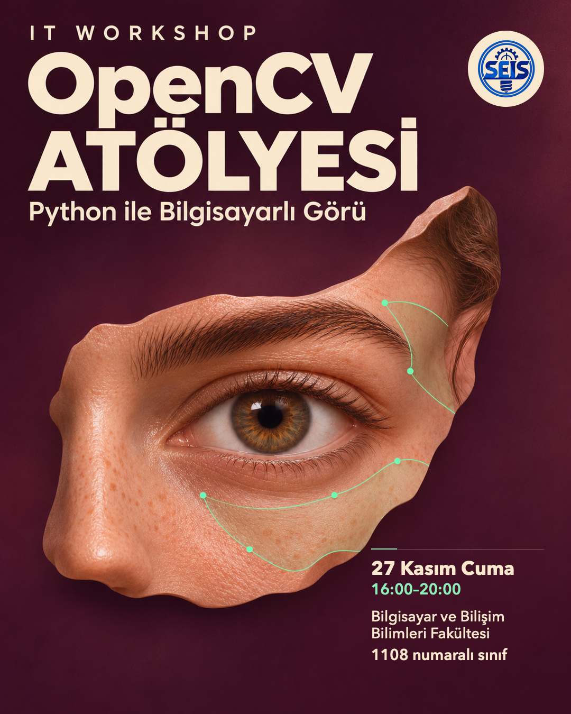
OpenCV Nedir? Bilgisayara "Görmeyi" Öğretmek
İnsan gözü bir ortama baktığında yüzleri, nesneleri ve hareketi anında anlar; bilgisayar içinse kamera görüntüsü yalnızca milyonlarca sayıdan oluşur. OpenCV, bu sayıları işleyip anlamlı bilgiye dönüştüren — yani bilgisayara görme yeteneği kazandıran — açık kaynaklı bilgisayarlı görü kütüphanesidir.
Görüntüyü Hazırlar & Çizer
Kamerayı açar, görüntüyü aynalar, boyutlandırır, renk uzayını çevirir (BGR→RGB/HSV/LAB), filtre uygular ve bulduğu sonuçları ekrana çizer.
Karmaşık Örüntüleri Tanır
OpenCV'nin hazırladığı karede 478 yüz noktası, 21 el eklem noktası ve saç/cilt segmentasyonunu harici ekran kartı gerekmeden CPU'da çıkarır.
Sayıları Anında İşler
Her kamera karesini (yükseklik, genişlik, 3) boyutunda 0–255 arası sayılar olarak tutar; kırpma (ROI) ve anlık ölçüm hızı buradan gelir.
İnteraktif Piksel Matrisi & BGR Tuzağı
Bilgisayar bir gözü fotoğraf olarak değil, 0–255 arası sayılardan oluşan bir 3B matris olarak görür. Fareni aşağıdaki karelerin üzerinde gezdir!
12×12 Göz Piksel Matrisi
Fareyle Üzerinde Gezframe[y, x] BGR değerini gör!Unutulmaması Gereken 3 Altın Kural
- 1. KuralÖnce Satır (y), Sonra Sütun (x):
frame[y, x]yazılır.frame.shapeçıktısı(yükseklik, genişlik, 3)döner. - 2. KuralBGR vs RGB Tuzağı: OpenCV renkleri Mavi-Yeşil-Kırmızı okur. MediaPipe'a verirken mutlaka
cv2.cvtColor(frame, cv2.COLOR_BGR2RGB)yapmalısın! - 3. Kural30 FPS Bütçesi: Saniyede 30 kare göstermek için her karenin tüm işleme süresi yaklaşık 33 milisaniyenin altında kalmalıdır.
Canlı Görüntü İşleme Laboratuvarı
Gerçek piksel matematiğiyle çalışan filtreleri dene, sürgüyü kaydır ve karşılık gelen Python kodunu anında gör.
Renk dönüşümü, bulanıklaştırma, Otsu eşik, morfoloji ve kontur.
VideoCapture ile kamera okuma, pencere ve sürgü kontrolü.
Haar Cascade, QR okuyucu, YOLO ve ONNX derin öğrenme.
Kamera kalibrasyonu, perspektif düzeltme, ORB/SIFT eşleştirme.
Hangi Şirketler OpenCV'yi Ne Amaçla Kullanıyor?
OpenCV'yi kuran teknoloji devlerinden otonom araçlara, sosyal medya filtrelerinden stadyum kameralarına kadar gerçek kullanım alanları:
Intel
OpenCV'yi dünyaya kazandıran şirket. Fabrika bantlarında mikro-çip hata tespiti, RealSense 3D derinlik kameraları ve OpenVINO uç yapay zekâda kullanır.
Tesla & Otomotiv
Araç çevresindeki 8 kameranın lens kalibrasyonu, 360° kuş bakışı park görüntüsü, şerit takibi ve derin öğrenme öncesi görüntü hazırlığında kullanılır.
Google Lens belge/QR tarama, Street View 360° fotoğraf birleştirme ve bugün atölyede kullanacağımız MediaPipe yüz/el modelleriyle birlikte çalışır.
Meta (Instagram & Quest)
Instagram/WhatsApp canlı yüz AR efektleri, görüntülü görüşmede arka plan bulanıklaştırma ve Quest VR gözlüklerinde temassız el/oda takibinde kullanılır.
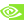
NVIDIA
cv2.cuda ile ekran kartında saniyede yüzlerce kare video analizi, otonom depo/fabrika robotları (Isaac) ve MR/BT medikal görüntü iyileştirmede kullanılır.
Sony (Hawk-Eye & PS VR)
Futbol (VAR) ve teniste yüksek hızlı kameralarla milimetrik top yörüngesi / çizgi teknolojisi, kamera sensör odaklama ve görsel nesne takibinde kullanılır.
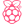
İHA & Gömülü · Drone Engel Kaçınma4 Saatlik Atölye Yol Haritası
3 ana proje + 7 bonus uygulama (AR, Enerji Ölçer, Oyunlar) + 12 soruluk ödüllü OpenCV bilgi yarışması:
.venv, modeller30 dk01, 02, 03 kodları35 dk04, 05, 0635 dk07, 0832 dk09, 1028 dk--source video.mp4 çalışır.
Python 3.12 Kurulumu & PATH Ayarı
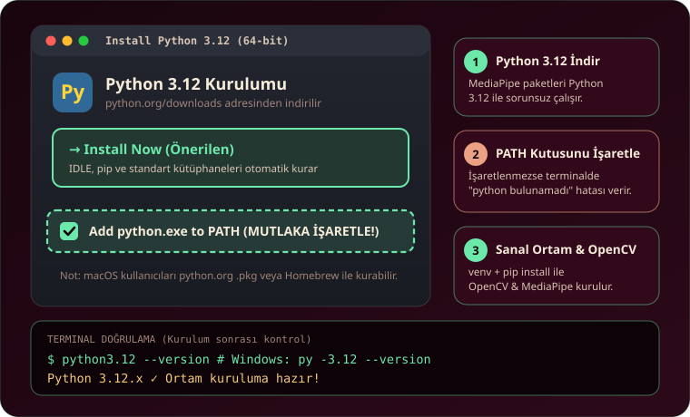
Adım Adım Python Kurulumu
- 1Yukarıdaki linkten Python 3.12 sürümünü indir (MediaPipe 3.12 ile sorunsuz çalışır).
- 2Windows kurulumunda alttaki "Add python.exe to PATH" kutusunu MUTLAKA işaretle, sonra Install Now de.
- 3Kurulum bitince aşağıdaki doğrulama komutunu kopyalayıp terminalde çalıştır:
python3.12 --version
py -3.12 --version
Tek Tıkla İndir, Sanal Ortam (.venv) & Modelleri Kur
Git kurmana bile gerek yok! Bilgisayarına uygun tek kutuyu kopyalayıp terminale yapıştır ve Enter bas — projeyi indirir, .venv kurar ve kamerayı test eder:
python3.12 -c "import os,urllib.request,zipfile; d=os.path.expanduser('~/seis-opencv'); os.makedirs(d,exist_ok=True); urllib.request.urlretrieve('https://github.com/yes3760/opencv/archive/refs/heads/main.zip',d+'/m.zip'); zipfile.ZipFile(d+'/m.zip').extractall(d)"
cd ~/seis-opencv/opencv-main/atolye-baslangic
python3.12 -m venv .venv
source .venv/bin/activate
pip install -r requirements.txt
python scripts/download_models.py
python scripts/check_setup.py --kamera
py -3.12 -c "import os,urllib.request,zipfile; os.makedirs('C:/seis-opencv',exist_ok=True); urllib.request.urlretrieve('https://github.com/yes3760/opencv/archive/refs/heads/main.zip','C:/seis-opencv/m.zip'); zipfile.ZipFile('C:/seis-opencv/m.zip').extractall('C:/seis-opencv')"
pushd C:\seis-opencv\opencv-main\atolye-baslangic
py -3.12 -m venv .venv
.venv\Scripts\python.exe -m pip install -r requirements.txt
.venv\Scripts\python.exe scripts\download_models.py
.venv\Scripts\python.exe scripts\check_setup.py --kamera
C:\seis-opencv\opencv-main\atolye-baslangic klasörüne kurar (OneDrive ve Türkçe karakter hatasını önler). py -3.12 tanınmazsa yerine python yazın. Intel Mac: requirements-intel-mac.txt.
⬇ Manuel ZIP
VS Code'da Projeyi Açma & Çalıştırma
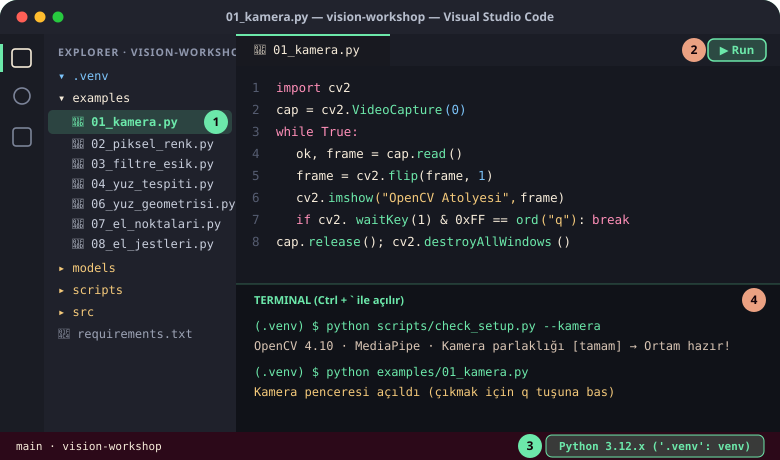
4 Adımda VS Code Hazırlığı
- 1Terminalden Direkt VS Code'da Aç: Klasörün içindeyken aşağıdaki komutu yapıştır — proje ve
01_kamera.pydoğrudan açılır!
open -a "Visual Studio Code" . examples/01_kamera.py
open -a "Antigravity IDE" . examples/01_kamera.py
code . examples/01_kamera.py
- 2▶ Run Butonu: Microsoft Python eklentisi kuruluysa sağ üstten tek tıkla çalıştırabilirsin.
- 3.venv Seçimi: Sağ alt köşede
Python 3.12 (.venv)yazmalı. Değilse tıklayıp.venvseç! - 4Terminal:
Ctrl + `ile aç, satır başında(.venv)görüyorsan aşağıdaki komutu yapıştır:
python examples/01_kamera.py
Proje Klasör Mimarisi: Ne Nerede?
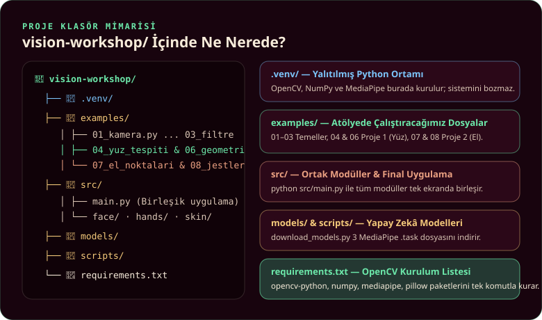
Klasörlerin Görevleri
examples/: Atölyede sırayla çalıştıracağımız 01–10 arası temiz ve öğretici Python kodları.src/: Yüz, el ve cilt modüllerinin kütüphane yapısı ile birleşikmain.pyuygulaması.models/: MediaPipe'ın yerel.taskyapay zekâ ağırlıkları (internetsiz çalışır).scripts/: Model indirme ve kamera/ortam doğrulama araçları.
Sınıfta En Sık Çıkan 6 Hata ve Anında Çözümü
Öğrenci raporunun C ve L bölümlerindeki gerçek test bulguları — internetteki eski kodların neden patladığını buradan gör:
Eski MediaPipe API'si Kaldırıldı
mediapipe 1.1+ paketinde mp.solutions yoktur. İnternetteki çoğu örnek bu yüzden hata verir; projede Tasks API (mp.tasks.vision) kullanılır.
opencv-python vs contrib
İkisi aynı ortama kurulursa aynı cv2 klasörünü bozar. Yalnızca requirements.txt içindeki opencv-contrib-python kurulur.
Doğru Paket Dosyası
Intel Mac'te requirements-intel-mac.txt (MediaPipe 0.10.21) kurulur. Python 3.12 hem Apple Silicon hem Intel Mac'te ortak sürümdür.
cv2.putText Sınırlaması
cv2.putText ş, ğ, ı, ö, ü harflerini ? basar. Projedeki common.draw.put_text bunu Pillow ile temiz çözer.
Yanlış Kamera Numarası
Mac'te 0 numara iPhone Süreklilik Kamerasına bağlanabilir. --source auto veya --source 1 kullanın; Zoom/Teams'i kapatın.
Monotonik Zaman Damgası
VIDEO modunda aynı milisaniyede iki kare gelirse hata verir. src/common/frame.py içindeki FrameClock bunu otomatik önler.
İlk Kamera Döngüsü (01_kamera.py)
python examples/01_kamera.py
5 Adımda Kamera Döngüsü
- 1. Aç:
cv2.VideoCapture(0)dahili kameraya bağlanır. - 2. Oku:
ok, frame = cap.read()her kareyi NumPy dizisi olarak alır. - 3. Aynala:
cv2.flip(frame, 1)doğal ayna görüntüsü verir. - 4. Göster:
cv2.imshow+cv2.waitKey(1)pencereyi yeniler (qile çıkılır). - 5. Bırak:
finallybloğundakicap.release()kamera ışığını kapatır.
import cv2 cap = cv2.VideoCapture(0) try: while True: ok, frame = cap.read() # kareyi NumPy dizisi olarak oku if not ok: break frame = cv2.flip(frame, 1) # 1: yatay ayna goruntusu h, w, ch = frame.shape cv2.putText(frame, f"{w}x{h} {frame.dtype}", (12, 32), cv2.FONT_HERSHEY_SIMPLEX, 0.8, (191,212,45), 2) cv2.imshow("01 Kamera (q: cikis)", frame) if (cv2.waitKey(1) & 0xFF) in (ord("q"), 27): break finally: cap.release() # kamerayi mutlaka serbest birak cv2.destroyAllWindows()
Piksel Okuma & BGR / HSV / LAB (02_piksel_renk.py)
python examples/02_piksel_renk.py
Sınıfta Yapılacak Canlı Deneyler
- b TuşuBGR'yi RGB Sanma Hatası: Kanallar ters çevrilince yüzlerin maviye döndüğünü canlı gör!
- TıklaGörüntüye tıkladığında o pikselin BGR, RGB, HSV ve LAB sayıları terminale yazılır.
- HSV (H 0–179): Renk tonunu parlaklıktan ayırır; renkli nesne takibinde kullanılır.
- LAB (a* kanalı): Yeşil–kırmızı eksenini ölçer; cilt analizi modülünün temelidir.
# Kanallari ters cevirerek BGR -> RGB hatasini goster swapped = small[:, :, ::-1] # Temel renk uzayi donusumleri gray = cv2.cvtColor(small, cv2.COLOR_BGR2GRAY) hsv = cv2.cvtColor(small, cv2.COLOR_BGR2HSV) lab = cv2.cvtColor(small, cv2.COLOR_BGR2LAB) # Fareyle tiklanan (py, px) pikselini okuma b, g, r = small[py, px] h, s, v = hsv[py, px] # H: renk tonu (0-179) L, a, bb = lab[py, px] # a: yesil-kirmizi ekseni
ROI, Bulanıklaştırma, Otsu Eşik & Kontur (03_filtre_esik.py)
python examples/03_filtre_esik.py
- ROI (İlgi Bölgesi): Tüm ekranı değil, fareyle seçtiğin küçük alanı işler — hem hızlanır hem gereksiz detay elenir.
- Otsu (Otomatik Siyah-Beyaz): Parlaklık sınırını elle aramak yerine bilgisayar ışığa göre otomatik bulur.
- Morfoloji (Temizlik): Açma küçük beyaz lekeleri süpürür, Kapama nesne içindeki küçük delikleri doldurur.
- Kontur (Sınır Çizgisi): Temizlenen beyaz nesnelerin dış çevresini çizip alanını ölçer.
region = small[y1:y2, x1:x2] gray = cv2.cvtColor(region, cv2.COLOR_BGR2GRAY) blurred = cv2.GaussianBlur(gray, (k, k), 0) used, binary = cv2.threshold( blurred, 0, 255, cv2.THRESH_BINARY + cv2.THRESH_OTSU ) kernel = cv2.getStructuringElement(cv2.MORPH_ELLIPSE, (m, m)) cleaned = cv2.morphologyEx( cv2.morphologyEx(binary, cv2.MORPH_OPEN, kernel), cv2.MORPH_CLOSE, kernel ) contours, _ = cv2.findContours(cleaned, cv2.RETR_EXTERNAL, cv2.CHAIN_APPROX_SIMPLE) big = [c for c in contours if cv2.contourArea(c) > 80] cv2.drawContours(view[y1:y2, x1:x2], big, -1, TEAL, 2)
Proje 1: Nasıl Çalışır ve Ekranda Ne Göreceğiz?
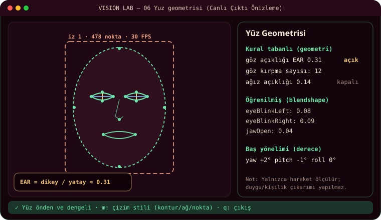
Projenin 3 Yapı Taşı
- 478 NoktaGöz kapağı, kaş, burun ve dudak hattı 3B koordinat olarak milisaniyede bulunur.
- EAR OranıGözün dikey açıklığını yatay genişliğine böler. Uzaklık değişse de kırpma tespiti bozulmaz!
- Baş YönelimiSağa-sola (
yaw), yukarı-aşağı (pitch) ve yatma (roll) açıları ölçülür. - Gerçek Hayat: Araçlarda sürücü yorgunluk/uyku uyarısı tam olarak bu EAR mantığıyla çalışır.
Klasik Haar vs MediaPipe 478 Nokta (04_yuz_tespiti.py)
python examples/04_yuz_tespiti.py
python examples/04_yuz_tespiti.py --yontem haar
Kodun Adım Adım Akışı
- 1. Hazırlık:
prepare(raw)kareyi küçültür ve BGR'den RGB'ye çevirir. - 2. Model:
faces.process(frame)MediaPipe Tasks API ile 478 noktayı bulur. - 3. Önce Çiz, Sonra Aynala: Model düz görüntüyü görür; çizim yapılıp sonra
canvas.flip()uygulanır ki yazılar ters çıkmasın! - m TuşuÇizim stilini canlı değiştirir: kontur / ağ / nokta.
with Camera(args.source, W, H) as cam, \ FaceTracker(max_faces=args.max_faces) as faces, \ DisplayLoop("04 Yuz noktalari", args) as loop: while loop.running: frame = prepare(cam.read()) # 1. boyut + RGB + mp.Image result = faces.process(frame) # 2. 478 nokta tespiti canvas = Canvas(frame, mirror=True) for face in result.faces: # 3. sekilleri ciz draw_face(canvas.image, canvas.pts(face.points), canvas.pts(face.box), STYLES[style]) canvas.flip() # 4. ekrana ayna uygula if loop.show(canvas.image) == ord("m"): style = (style + 1) % 3
Tespit, Takip, Tanıma Farkı & EMA Yumuşatma
"Bu karede yüz var mı, nerede?" Her karede kutu veya 478 nokta üretir.
"Önceki karedeki yüz bu karede hangisi?" İz numarası verir; yüz çıkıp girerse numara değişir.
"Bu kişi kim?" Kimlik tanıma ve gözetim MediaPipe model kartlarına göre kapsam dışıdır.
python examples/05_yuz_takip.py
- EMA (Yumuşatma Nedir?): Kameradan gelen titrek noktayı önceki konumuyla karıştırıp akıcı hale getirir (
yeni = α·ölçüm + (1−α)·eski). - α Küçülürse (0.10): Çizgi çok pürüzsüz olur ama elini hızlı çevirince hafif geriden gelir.
- α Büyürse (0.80): Anında tepki verir ama küçük kamera titremeleri ekrana yansır.
- One Euro Filtresi: Yavaşken yumuşatan, hızlı hareket edince gecikmeyi azaltan akıllı filtre.
# Gri cizgi: ham olcum | Turkuaz cizgi: EMA yumusatilmis iz # + ve - tuslariyla alpha degerini canli degistirip dene! options = vision.FaceLandmarkerOptions( base_options=base_options(config.FACE_MODEL), running_mode=vision.RunningMode.VIDEO, # takip acik num_faces=1, output_facial_transformation_matrixes=True ) result = landmarker.detect_for_video(frame.mp_image, frame.timestamp_ms)
Göz Kırpma Sayacı & Geometri (06_yuz_geometrisi.py)
python examples/06_yuz_geometrisi.py
Ölçümler Nasıl Hesaplanıyor?
- 1. Geometrik EAR:
eye_aspect_ratiosol ve sağ gözün dikey/yatay oranını hesaplar; göz kapanınca oran hızla 0.20 altına düşer. - 2. Kırpma Sayacı:
BlinkDetectorgözün kapanıp tekrar açılmasını tek bir kırpma olarak sayar. - 3. Öğrenilmiş Blendshape: Modelin kendi 0–1 arası
eyeBlinkLeftskoruyla kural tabanlı EAR'ı yan yana karşılaştırırız. - Etik SınırKamera yalnızca gözlenebilir hareketi ölçer; kişilik veya duygu çıkarımı yapmaz.
face = result.faces[0] p = face.points # 1. Kural tabanli olcum: Goz aciklik orani (EAR) & kirpma sayaci ear = (eye_aspect_ratio(p, RIGHT_EYE_EAR) + eye_aspect_ratio(p, LEFT_EYE_EAR)) / 2 closed = blink.update(ear) mar = mouth_aspect_ratio(p) # 2. Ogrenilmis model ciktisi (blendshapes: 0.0 - 1.0) bs = face.blendshapes print(f"Kirpma: {blink.blinks} | EAR: {ear:.2f} | " f"Sol: {bs.get('eyeBlinkLeft', 0):.2f} | Yaw: {face.pose.yaw:+.0f}°")
Poz Hatası (%12) ve "Bir Kamera Neyi Ölçebilir?"
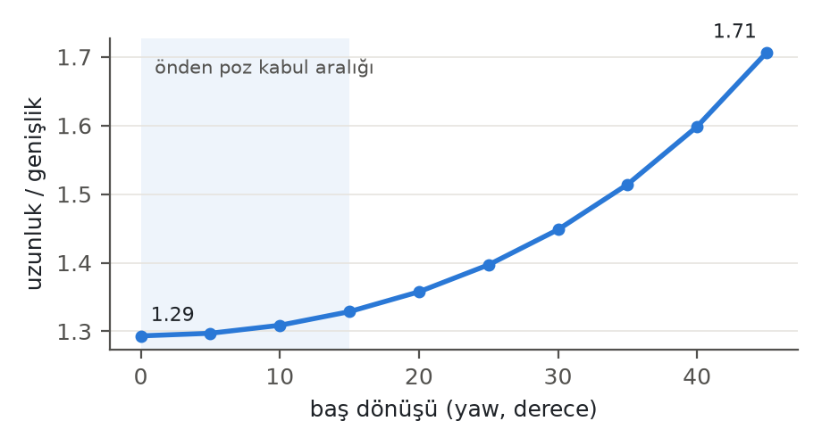
Kritik Mühendislik ve Etik Gerçekler
- ÖlçülebilenlerNokta konumu, oranlar, göz kırpma (EAR), ağız açıklığı, baş yönelimi ve hareket hızı.
- ÖlçülemeyenlerKamera yalnızca piksel ışığını kaydeder; mutluluk/duygu, kişilik, zekâ veya güvenilirlik çıkarılamaz (Barrett vd., 2019).
- Poz Etkisi: Mesafe değişse de oran sabit kalır ama baş 30° dönünce oran %12 şişer — bu yüzden sistem yalnızca önden pozda sonuç verir!
- Derinlik (z): Tek kamera gerçek santimetre ölçmez;
zyalnızca yüz merkezine göreli derinliktir.
Proje 2: El Hareketini Güvenilir Komuta Çevirme
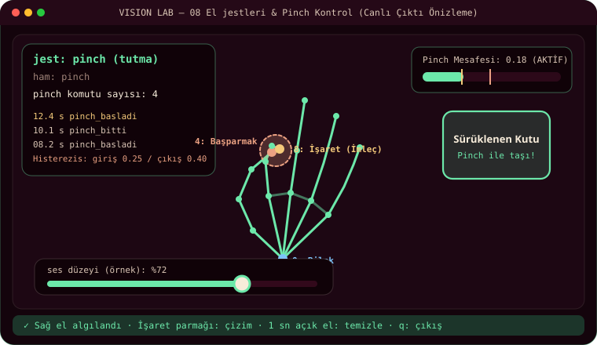
Neden Sadece Mesafe Yetmez?
- Kilit Noktalar0: Bilek · 4: Başparmak ucu · 8: İşaret parmağı ucu (ekran imleci).
- HisterezisTek eşik (örn. 0.30) parmak titreyince saniyede 10 kez komut patlatır. Giriş 0.25 / Çıkış 0.40 çift eşiği ile 1 hareket = 1 komut!
- GüvenlikEl kadrajdan çıkınca 300 ms içinde durum otomatik sıfırlanır; sürüklenen nesne takılı kalmaz.
Gürültülü Sinyalden Tek Komut: Tek Eşik vs Histerezis
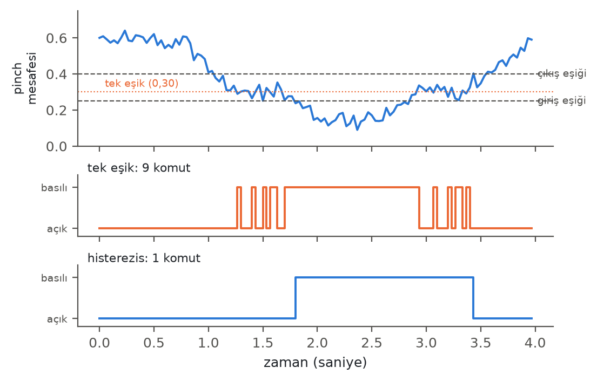
4 Katmanlı Kararlılık (Günlük Hayattan Örneklerle)
- 1. Histerezis (Çift Eşik) Kombi termostatı gibi: Parmaklar 0.25'te tutar, 0.40'ta bırakır. Aradaki tampon boşluk parmak titremesini yutar.
- 2. Debounce (Bekleme) Yanlışlıkla anlık dokunmayı eler: Hareket en az 120 ms sabit durmazsa gerçek komut sayılmaz.
- 3. Cooldown (Dinlenme) Üst üste çift tıklamayı önler: Bir komuttan sonra 700 ms boyunca yeni jest tetiklenmez.
- 4. Kenar Tetikleme Tek tık mantığı: Parmaklar kapalı durdukça sürekli değil, yalnızca ilk birleştiği anda 1 kez komut verir.
Parmak Açıları & Sağ/Sol Deneyi (07_el_noktalari.py)
python examples/07_el_noktalari.py
Adım Adım Parmak Durumu
- n TuşuEkranda 0–20 arası tüm eklem numaralarını açıp kapatır.
- Neden Açı (
angle_deg)? "Uç eklemin üstünde mi?" kuralı el yana/ters dönünce bozulur; orta eklem açısı el nasıl dönerse dönsün doğru kalır! - Sağ/Sol Kontrolü: Yalnızca sağ elini kaldır, ekranda "sağ" yazmalı (ters ise
src/config.py→HANDEDNESS_SWAP = True).
for hand in result.hands: states = finger_states(hand.points) gesture = GESTURE_NAMES[classify_static(states)] # Her parmak icin orta eklem acisini derece olarak hesapla for name, (a, b, c, d) in FINGERS.items(): angle = angle_deg(hand.points[a], hand.points[b], hand.points[c]) # aci buyukse parmak acik, kucukse kapali print(f"{hand.label_tr} el · {name}: {angle:.0f}° ({states[name]})")
Havada İsim Yazma, 1–5 Parmak Renk & Yumrukla Sil (08_el_jestleri.py)
python examples/08_el_jestleri.py
Tüm Hareketleri Canlı Dene!
- ☝️ İşaret Parmağı: Havada karalama yap ve ekrana kendi adını yaz!
- 🖐️ 1–5 Parmak Göster (0.35 sn tut): 5 renkli paletten canlı renk değiştir (veya
1–5tuşları). - ✊ Yumruk (0.7 sn tut): İlerleme çubuğu dolunca tüm çizimi siler · 🤏 Pinch: Fırça kalınlığı sürgüsü & kutu taşı!
- F TuşuTüm VISION LAB pencerelerinde Özellikler & Kullanım rehberini açar · s TuşuÇizimi PNG kaydet!
# 1. Isaret parmagiyla aktif renkte havada cizim / isim yazma drawing.update(cursor, ciziyor, color=renk_bgr, thickness=firca_kalinlik) # 2. 2-5 parmak gosterimi (0.35 sn) -> 5 renkli paletten renk sec if parmak_n in (2, 3, 4, 5) and now_ms - color_hold_since >= 350: aktif_renk_idx = parmak_n - 1 # 3. Yumruk (0 parmak, 0.7 sn tut) -> tum cizimi temizle! if (state.gesture == "yumruk" or parmak_n == 0) and silme_orani >= 1.0: drawing.clear()
Proje 3: Bölgeler, Kalite Kontrolü & Işık Etkisi
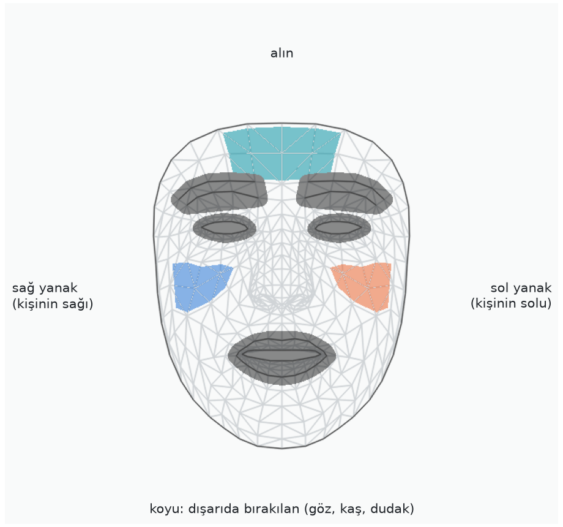
Cilt Aynı, Işık Farklı → Sayılar Nasıl Değişir?
- Kalite KapısıTek yüz, min. 180 px genişlik, önden poz, netlik ve pozlama geçmezse sonuç üretilmez.
- Işık DeneyiAynı fotoğrafta sıcak ışıkta alnın
a*değeri 15.7 → 24.2; yan ışıkta iki yanak arasıΔE3.1 → 27.2 olmuştur! - Neden Göreli Ölçüm? Mutlak eşik açık ten/stüdyo ışığında %80'i "parlak" sanar; göreli
Δa*bu yanılgıyı engeller. - UyarıEğitim amaçlı görüntü analizidir; tıbbi tanı veya nem/kolajen ölçümü değildir.
Alın & Yanak Maskeleri + Saç Ayrımı (09_cilt_bolgeleri.py)
python examples/09_cilt_bolgeleri.py
Bölgeler Nasıl Temizleniyor?
- 1. Çokgen Maskesi: 478 yüz noktasından alın, sağ yanak ve sol yanak çokgenleri çizilir.
- 2. Dışlama & Aşındırma: Göz, kaş ve dudak maskeden çıkarılır; kenarlardan içeri aşındırılır (
SKIN_ROI_EROSION_RATIO). - s TuşuSelfie Multiclass Segmenter modelini canlı açıp kapatarak saç/aksesuar maskeleme farkını gözle!
- Güvenli Yedek: Segmentasyon modeli yoksa renk tutarlılığı yöntemiyle otomatik devam eder.
if len(result.faces) == 1: face = result.faces[0] # 1. Segmentasyon modeli ile sac/cilt maskesi uret (s tusu ile ac/kapat) seg = segmenter.segment(canvas.image) if use_seg else None # 2. Alin & yanak maskelerini olustur, goz/dudak/saci disla regions = build_region_masks( canvas.image, canvas.pts(face.points), face.width_px * canvas.scale, config.SKIN_ROI_EROSION_RATIO, seg ) draw_regions(canvas.image, regions)
Açıklanabilir Cilt Görünümü Analizi (10_cilt_analizi.py)
python examples/10_cilt_analizi.py
Tek Kare Analiz & Kontroller
- Boşluk (Space)Kalite listesi tamamen yeşilse tek kare alıp ~37 ms içinde analiz eder (görüntü kaydedilmez).
- 1–4 TuşlarıSabit aralıklı ısı haritaları arasında geç:
Δa*(kızarıklık), parlaklık, doku değişimi veΔE76renk farkı. - Kalite Reddi: Baş dönerse, ışık çok düşükse veya 2 kişi varsa
quality.ok == Falseolur ve sonuç üretilmez. - Otomatik Mod:
--otomatikparametresiyle 2 saniyede bir güncellenir.
# Kalite onizlemesi 0.5 sn'de bir guncellenir if now - last_preview >= PREVIEW_INTERVAL_S: preview = analyzer.analyze(frame.full_bgr, result.faces, frame.scale_to_full) # Bosluk tusu: tek karede aciklanabilir analiz | 1-4: isi haritasi sec key = loop.show(np.hstack([img, result_panel(captured, map_name)])) if key == ord(" "): captured = analyzer.analyze(frame.full_bgr, result.faces, frame.scale_to_full) elif ord("1") <= key <= ord("4"): map_name = MAP_KEYS[key - ord("1")]
Sınıflandırma · Tespit · Segmentasyon & Model Seçimi
Tüm görüntüye tek etiket verir (örn. "kedi" veya "2. derece"). Nerede olduğunu söylemez.
Nesnelerin yerini dikdörtgen kutu (bbox) ve sınıf etiketiyle gösterir (YOLO, BlazeFace).
Her piksele ayrı sınıf atar (saç, yüz cildi, arka plan). Projede Selfie Multiclass kullanılır.
MediaPipe Selfie Multiclass Segmenter
Apache-2.0 açık lisanslı, 16.4 MB, CPU'da 33 ms, Monk 10 cilt tonu adalet değerlendirmeli. Yalnızca saç/cilt ayrımı yapar; tanı koymaz.
acne-lds & VitalGaze Değerlendirmesi
acne-lds: Ağırlık lisansı belirsiz + klinik veri/webcam farkı + tıbbi derecelendirme riski. VitalGaze: Lisanssız + belirsiz pickle dosyası. Her açık GitHub reposu üretime alınmaz!
Tek Kamera, Ortak Kare & CPU Hız Ölçümleri
Mühendislik Tasarım Kararları
- Ortak Kare: Görüntü her döngüde yalnızca 1 kez okunur ve 1 kez RGB'ye çevrilir.
- Modeller Bir Kez Yüklenir: Döngü içinde model başlatmak FPS'i öldürür.
- Merkezi Eşikler: Tüm eşikler tek dosya olan
src/config.pyiçinde belgelenir. - Yalıtılmış Hata: Bir model dosyası eksikse yalnızca o modül kapanır; uygulama çökmez.
Gerçek Benchmark Sonuçları (scripts/benchmark.py)
Sınıfta Yapılacak 5 Deney & OpenCV Kopya Kağıdı
Rapordan 5 Hızlı Gözlem Deneyi
- 1. Işık & Otsu: Oda ışığını değiştirip sabit eşik vs Otsu kontur sayısını kıyasla (
03). - 2. EMA Tepkisi:
05_yuz_takip.py'deα=0.10ve0.80ile başını hızlı çevir. - 3. Mesafe vs Poz: 40 cm vs 80 cm uzaklıkta oran sabit; başı 20° çevirince oran sapar (
06). - 4. Debounce Testi:
GESTURE_STABLE_MS=0yapıp pinch sınırında komut patlamasını gör (08). - 5. Işık Yönü: Pencereye düz vs yan dönüp
ΔEdeğişimini gözle (10).
cap = cv2.VideoCapture(0) # Kamerayı aç ok, frame = cap.read() # Kare oku (BGR) frame = cv2.flip(frame, 1) # Ayna görüntüsü rgb = cv2.cvtColor(frame, cv2.COLOR_BGR2RGB) # Renk dönüşümü blur = cv2.GaussianBlur(gray, (5, 5), 0) # Gürültü azalt edge = cv2.Canny(blur, 60, 150) # Kenar bul _, bw = cv2.threshold(blur, 0, 255, cv2.THRESH_OTSU) # Otomatik eşik cnts, _ = cv2.findContours(bw, cv2.RETR_EXTERNAL, 2) # Kontur çıkar
Birleşik Uygulama (src/main.py) & Bonuslar
Yüz + El + Cilt Analizi Tek Ekranda
python src/main.py
- 1–4 Tuşları: Yüz, El, Cilt Görünümü ve Birleşik modlar arasında anında geçiş yapar.
- Boşluk (Space): Işık ve poz kalite kontrolüyle LAB
a*cilt ısı haritası üretir (eğitim amaçlıdır; tıbbi tanı değildir).
Sanal Çizim Tahtası (bonus1_sanal_kalem.py)
Renkli kalem kapağını HSV maskesiyle takip edip havada çizim yap.
Akıllı Belge Tarayıcı (bonus2_belge_tarayici.py)
Kağıdın 4 köşesini bul, s ile düz PDF görünümüne çevir.
Canlı Sınıf Kişi Sayacı
Telefon/laptop kamerasıyla sınıftaki kişileri canlı say!
SEIS Neon AR El Jestleri Stüdyosu (bonus3_el_kalp_efekti.py)
python bonus_projeler/bonus3_el_kalp_efekti.py
7 Canlı AR Efekti + 3 Sahne Modu
- 🫶 İki Elle Kalp: Neon bloom kalp + şarj barı →
%100olunca Şok Dalgası & 56 parçacık patlaması! - ⚡ İki Açık El: Avuçlar arasında kırılan canlı plazma şimşek arkı + büyüyen enerji küresi!
- 🖐️ Tek Açık El / ☝️ İşaret: Dönen siber mandala halkası + havada sönen neon lazer izi!
- ✌️ V (SEIS) / 👍 Yıldız / ✊ Yumruk: Konfeti, altın yıldız yağmuru ve enerji çekim alanı!
- m TuşuSinema Neon / Doğal / TRON Kenar · s TuşuHatıra PNG kaydet!
# Gercek Additive Neon Bloom: ayri glow katmani + GaussianBlur + cv2.add def bloom_birlestir(arka, glow): h, w = glow.shape[:2] kucuk = cv2.resize(glow, (w // 2, h // 2)) bloom = cv2.resize(cv2.GaussianBlur(kucuk, (21, 21), 0), (w, h)) return cv2.add(cv2.add(arka, bloom), glow) # Iki elin basparmak (4) ve isaret (8) uclari yaklasinca kalp algila! if bas_d < 0.78 and isr_d < 0.88: cv2.fillPoly(glow, [kalp_pts(cx, cy, nabiz)], PINK, cv2.LINE_AA)
Işık Kamerayı Nasıl Yanıltır? (bonus4_cilt_ayna_studyo.py)
python bonus_projeler/bonus4_cilt_ayna_studyo.py
2 Adımda Yapay Zekâyı Işıkla Şaşırt!
- Ne İşe Yarar? Sosyal medyadaki "yapay zekâ cilt analizi" uygulamalarının tek bir ışık değişimiyle nasıl farklı sonuçlar verdiğini canlı kanıtlar!
- 1. Adım (
Boşluk): Normal oda ışığında 1. Fotoğrafını çek. - 2. Adım (
Boşluk): Yüzüne telefon feneri tut (veya pencereye yan dön) ve 2. Fotoğrafını çek → Cildin hiç değişmediği halde kızarıklık ve parlama sayılarının nasıl değiştiğini yan yana gör! - 1–4 TuşlarıIsı haritası değiştir · s TuşuPNG kaydet · NotTıbbi tanı değildir.
# 1. Bosluk -> Normal isikta 1. Cekim # 2. Bosluk -> Telefon isigi / yan isikta 2. Cekim if key == ord(" "): yeni = esnek_cekim_al(analyzer, frame, result.faces) if cekim_1 is None: cekim_1 = yeni # 1. Cekim (Once) else: cekim_2 = yeni # 2. Cekim (Yeni Isik -> Farki Gor!) sag = sag_panel_ciz(cekim_1, cekim_2, map_name, height=img.shape[0])
SEIS Sınıf Enerji Ölçer (bonus5_sinif_enerji_olcer.py)
python bonus_projeler/bonus5_sinif_enerji_olcer.py
Gün Başı vs. Eğitim Sonu Sınıf Enerjisi
- 12 Yüze Kadar Canlı Ölçüm:
FaceTracker(max_faces=12, blendshapes=True)ile sınıftaki tüm yüzlerin gülümseme (mouthSmile) ve kaş/göz canlılığı skorlarını anlık ölçer. - 1 Tuşu (Gün Başı · 16:00): Atölye açılışında sınıfın ortalama enerji yüzdesini ve yüz sayısını kaydeder.
- 2 Tuşu (Eğitim Sonu · 20:00): Kapanış ölçümünü alır ve ekranda +Δ% enerji değişimi tablosunu çıkarır!
- s TuşuKarşılaştırma raporunu PNG kaydet · Etik NotYalnızca yüz kası hareketi ölçülür; gerçek duygu tanısı değildir.
# 12 yuze kadar ayni anda blendshape gulumseme + canlilik skoru def yuz_enerji_skoru(bs): gulumse = (bs.get("mouthSmileLeft", 0) + bs.get("mouthSmileRight", 0)) / 2 yanak = (bs.get("cheekSquintLeft", 0) + bs.get("cheekSquintRight", 0)) / 2 kas_catik = (bs.get("browDownLeft", 0) + bs.get("browDownRight", 0)) / 2 return min(100, max(0, (gulumse * 0.70 + yanak * 0.30 - kas_catik * 0.20) * 135)) # 1: Gun Basi kaydi | 2: Egitim Sonu kaydi -> +Delta % karsilastirma! if key == ord("1"): gun_basi = (sinif_ort, len(result.faces)) if key == ord("2"): egitim_sonu = (sinif_ort, len(result.faces))
Göz / Ağız / Kafa ile Neon Flappy (bonus6_goz_flappy_oyunu.py)
python bonus_projeler/bonus6_goz_flappy_oyunu.py
3 Kontrol Modu + Rekor Yarışması (m Tuşu)
- 1. ↕️ Kafa Modu (En Kolay): Kuş doğrudan burnunun yüksekliğini takip eder — başını kaldırınca yükselir, eğince iner!
- 2. 😉 Göz Kırpma (EAR): Göz açıklığı (EAR) düştüğü anda kuş zıplar — sınıfta en yüksek skor yarışması için birebir!
- 3. 😮 Ağız Açma (MAR): Ağzını açtıkça kuş havalanır; ek paket (
pyautogui) kurmadan doğrudan OpenCV içinde çalışır. - İpucuChrome Dino için aynı
EAR/MARkoşulunapyautogui.press('space')ekleyebilirsin · F TuşuRehber!
# 3 temassiz kontrol modu: Kafa (burun), Goz Kirpma (EAR), Agiz Acma (MAR) if mod_idx == 0: _, burun_y = canvas.screen(p[1]) # kus burnunu takip eder! kus_y += (hedef_y - kus_y) * 0.28 elif mod_idx == 1 and blink.blinks > son_blink: zipla = True # goz kirpinca zipla! elif mod_idx == 2 and mar > 0.32: zipla = True # agiz acinca zipla!
Taş–Kağıt–Makas Oyunu (bonus7_tas_kagit_makas.py)
python bonus_projeler/bonus7_tas_kagit_makas.py
21 El Eklem Noktasından Anlık Hamle Tanıma
- ✊ TAŞ:
0–1açık parmak (yumruk) · 🖐️ KAĞIT:4–5açık parmak · ✌️ MAKAS: İşaret + orta açık, diğerleri kapalı. - Boşluk (Space) Tuşu: Ekranda 3 – 2 – 1 geri sayımı başlar; süre bitince kameradaki el hamlen yapay zekâyla kapışır!
- Canlı Skor & Galibiyet Serisi: Üst tabelada
SEN : BİLGİSAYARskoru, beraberlik ve seri takibi otomatik tutulur. - c TuşuSkoru sıfırla · F TuşuÖzellikler & Kullanım rehberi.
# 21 el noktasindan acik/kapali parmak durumlarini oku def hamle_tani(points): st = finger_states(points) acik = sum(1 for v in st.values() if v is True) if acik <= 1: return "TAŞ" if acik >= 4: return "KAĞIT" if st["işaret"] and st["orta"] and not st["yüzük"]: return "MAKAS"
Bugün 4 Saatte Neler Başardık?
Sıfırdan başlayarak bir dizüstü kamerasını gerçek zamanlı bilgisayarlı görü ve yapay zekâ etkileşimine dönüştürdük:
✅ Bugün Tamamladıklarımız
- 1. Kurulum & Temeller: Python 3.12,
.venv, kamera döngüsü, BGR/HSV/LAB, Otsu eşikleme ve konturları kurduk. - 2. Proje 1 (Yüz & Göz): 478 yüz noktası, EMA yumuşatma, mesafeden bağımsız EAR göz kırpma ve baş yönelimi ölçtük.
- 3. Proje 2 (El Jestleri): 21 el eklemi, açılar, Neon Hava Çizimi, 1–5 parmak renk paleti ve yumrukla silme yaptık.
- 4. Proje 3 & 7 Bonus: Cilt analizi, Neon AR VFX, A/B Işık, Sınıf Enerji Ölçer, Gözle Flappy ve Taş–Kağıt–Makas!
🚀 Buradan Sonra Nereye?
- Geliştir: Bugünkü kodlara göz kapalı alarmı, şekil tanıma veya kendi AR efektini ekleyip GitHub profiline koy!
- İleri Adım: Nesne tespiti için Ultralytics YOLO, veri setleri için Roboflow ve Kaggle'ı incele.
- Etik Bilinç: Bir kameranın neyi ölçebildiğini, neyi ölçemediğini ve açık kaynak lisanslarını her projede sorgula.
🏆 Ödüllü OpenCV Bilgi Yarışması!
Bugün öğrendiğimiz piksel matrisleri, BGR tuzağı, Otsu, 478 yüz noktası, EAR göz kırpma, histerezis ve cilt analizi konularından oluşan 12 soruluk canlı yarışma 19:40'ta sahnede başlıyor!